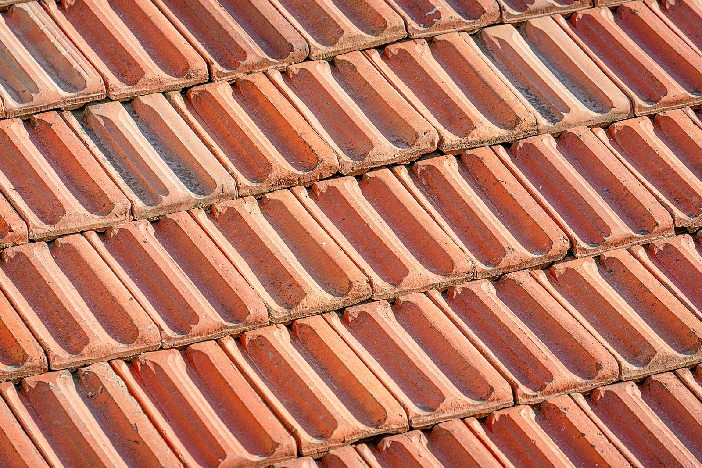
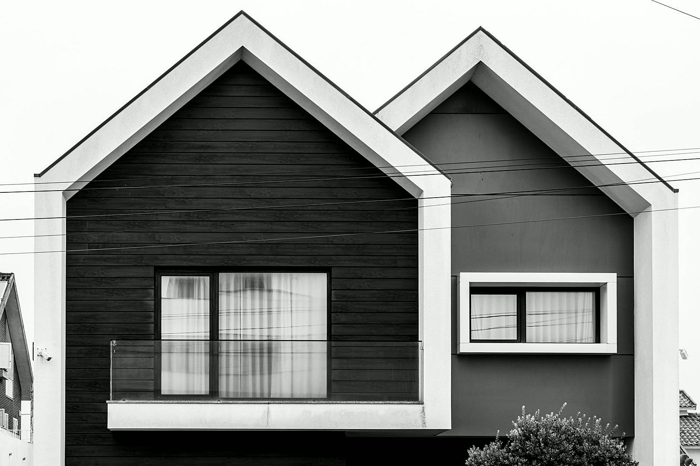

Dekarz w Siedlcach. Dachy nowe i remonty.
Od przełożenia kilku dachówek po nowy dach z więźbą. Ty pokazujesz problem - my mówimy, co ma sens i ile to kosztuje.
Zadzwoń teraz +48 502 202 444- Bezpłatna wycena
- Dojazd: Siedlce i okolice
- Gwarancja na robociznę


Wiesz, na czym stoisz - na każdym etapie
Od pierwszego telefonu do odbioru roboty - krok po kroku.
- 01
Dzwonisz
Opisujesz, co się dzieje z dachem. Od razu mówimy, czy to brzmi jak naprawa, czy jak większa robota - i kiedy możemy wejść na pomiar.
- 02
Pomiar i wycena
Wchodzimy na dach, mierzymy i robimy zdjęcia. Wycenę dostajesz na piśmie, rozbitą na pozycje - materiał osobno, robota osobno.
- 03
Robota
Materiał zamawiamy po zatwierdzeniu wyceny i pilnujemy dostawy. Z Twojego dachu schodzimy dopiero, jak jest skończony - nie w połowie na inną budowę.
- 04
Odbiór i gwarancja
Stare pokrycie jedzie na kontener, a Ty dostajesz gwarancję na robociznę - jak coś nie gra, wracamy i poprawiamy.
Z ostatnich dachów
Każdy z tych dachów ma pod sobą czyjś dom. Pokrycia, więźby, obróbki - bez upiększania.


Od więźby po rynny
To, po co dzwonią do nas najczęściej. Szczegóły w zakładce Oferta.
- Pokrycia dachoweStare pokrycie do zdjęcia albo nowy dom czeka na dach? Kładziemy blachodachówkę, dachówkę ceramiczną i betonową oraz blachę na rąbek - z membraną, łatami i kontrłatami, nie samą blachę na stare deski.Wycena →
- Remonty i naprawy dachówDach ma swoje lata, ale rzadko wszystko naraz jest do wymiany. Przekładamy dachówkę, wymieniamy skorodowane kosze i obróbki, uzupełniamy łaty i membranę tam, gdzie faktycznie puściło.Wycena →
- Więźba dachowaZmieniasz pokrycie na cięższe albo adaptujesz poddasze? Zanim na dach wjedzie dachówka, sprawdzamy, czy więźba to udźwignie - liczy się przekrój i rozstaw, nie dobre chęci.Wycena →
- Rynny i obróbki blacharskieRynna przelewa się w jednym miejscu albo odchodzi od okapu? Ustawiamy spadki na nowo, wymieniamy skorodowane odcinki i poprawiamy mocowania, zamiast od razu sprzedawać całe orynnowanie.Wycena →
- Okna dachowe i podbitkaMontujemy okna dachowe w nowych i istniejących dachach - z kołnierzem dobranym do pokrycia, bo to kołnierz decyduje o szczelności, nie sama szyba.Wycena →
- Dachy płaskie i papaGaraż, taras albo płaski dach nad domem? Zgrzewamy papę termozgrzewalną i układamy membrany z wyprowadzonymi spadkami, żeby woda nie stała w kałużach na środku.Wycena →
Co mówią klienci
Wpisz Margo w Google i przeczytaj opinie. Trzymamy je tam, gdzie nie możemy ich ani poprawić, ani skasować.
Dojeżdżamy do Ciebie
Nie wiesz, czy dojeżdżamy do Ciebie? Zadzwoń i zapytaj. Jak nie robimy w Twojej okolicy, powiemy od razu i nie zmarnujemy Ci dnia.
- Siedlce
- + okolice
Dobrze wiedzieć
Ile kosztuje nowy dach?
Bez pomiaru nie strzelamy - za dużo zależy od powierzchni, kątów i pokrycia. Widełki usłyszysz już przez telefon, dokładną cenę po pomiarze.
Czy pomiar i wycena są płatne?
Za wejście na dach i policzenie roboty nie bierzemy pieniędzy. Płacisz za dach, nie za rozmowę o nim.
Jak długo trwa wymiana dachu?
Typowy dom to zwykle tydzień, dwa - zależnie od pokrycia i pogody. Termin i czas roboty znasz przed startem, a o przesunięciu przez pogodę mówimy od razu, nie po fakcie.
Co ze starym pokryciem?
Rozbiórka i wywóz są w wycenie, chyba że umówimy się inaczej. Stary eternit oddajemy firmie z uprawnieniami do azbestu - tego nie wolno wywieźć byle gdzie i nie ma co ryzykować.
Czy dostanę fakturę?
Tak, na firmę albo prywatnie. Kwoty na fakturze zgadzają się z wyceną - żadnych pozycji dopisanych na koniec.
Co, jeśli dach przecieka po robocie?
Wracamy i sprawdzamy, gdzie puściło. Nasza robota - poprawiamy za darmo; przyczyna gdzie indziej - pokazujemy zdjęcia i mówimy, co z tym zrobić.
Potrzebujesz fachowca? Wycenimy za darmo.
Odezwij się - umówimy oględziny i usłyszysz konkretną kwotę. Za darmo.